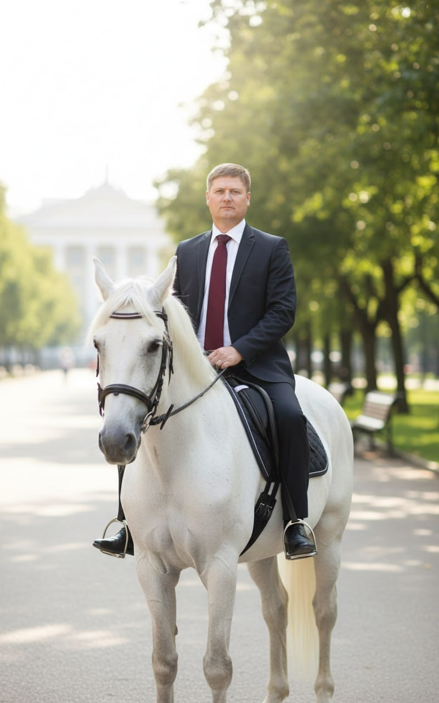

Адвокат, управляющий партнёр коллегии адвокатов. Специализация — сложные земельные, корпоративные и уголовные споры. Реестровый № 50/8915.
33|
Юридическую практику веду с 1999 года. В 2010 году присвоен статус адвоката — реестровый № 50/8915, Адвокатская палата Московской области. За 25+ лет провёл более 500 успешных дел — от земельных споров и арбитражных разбирательств до уголовной защиты.
38|Основная специализация — земельное право, недвижимость и строительство, сопровождение застройщиков по 214-ФЗ, арбитражные и корпоративные споры, банкротство юридических лиц. Также веду семейные, наследственные дела и уголовную защиту.
39|Отличительная черта моего подхода — личное ведение каждого дела от первой консультации до вынесения решения. Никаких менеджеров и посредников: если я берусь за дело, я веду его сам.
40|В коллегии собрана команда из 10 специалистов с опытом от 10 лет. Средний стаж юристов — более 15 лет. Собственная практика земельных споров — одна из сильнейших в Московском регионе.
41|Фундаментальное юридическое образование и постоянное повышение квалификации.
58|Запишитесь на бесплатную консультацию. Я изучу вашу ситуацию и предложу решение.
71| 72|